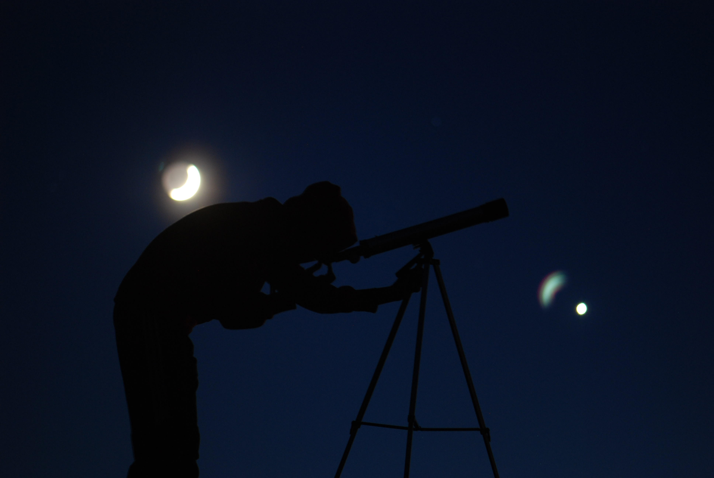
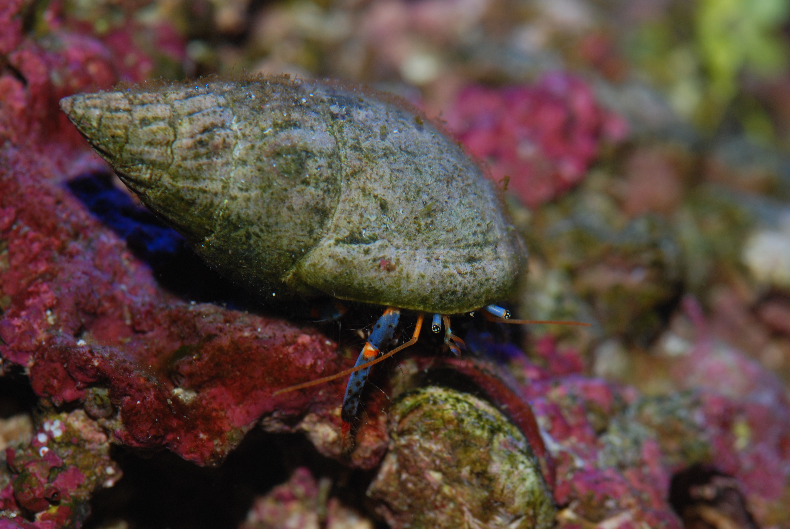
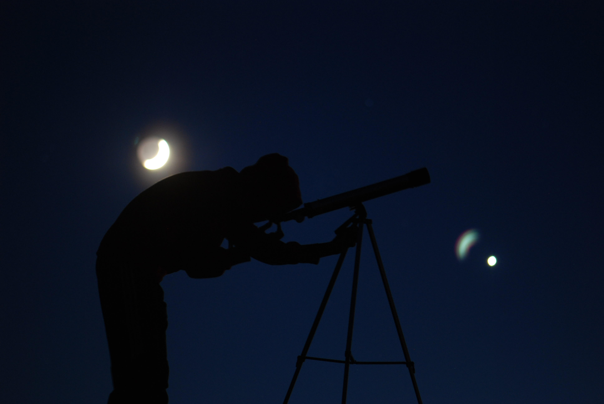
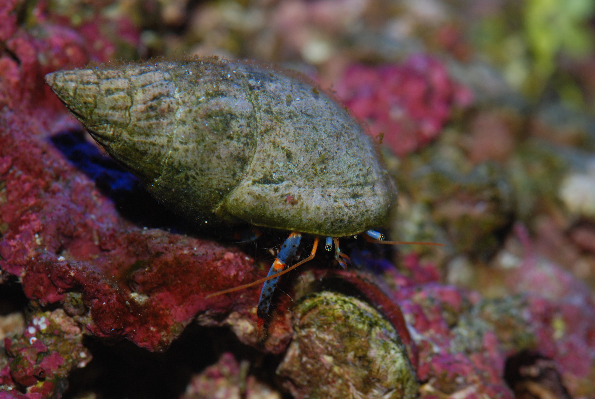
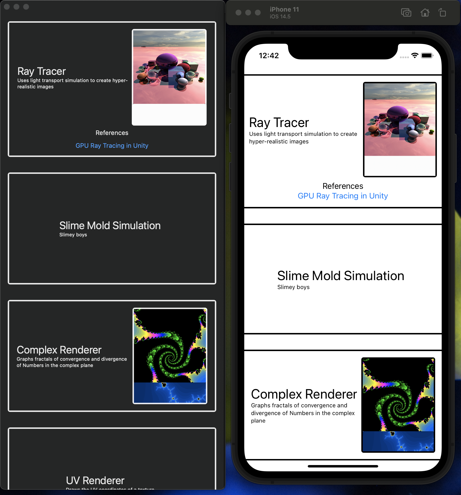
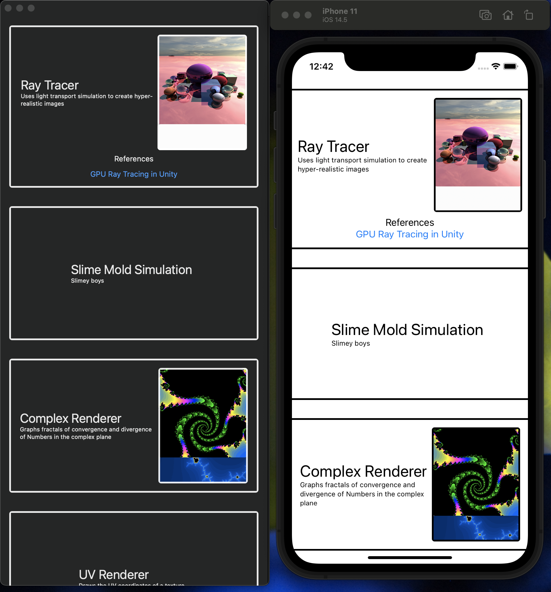

Ecosystem Simulation
This was a school project a friend and I made for March Intensive (essentially a project week).
Inspired by Sebastian Lague and Primer's exploration of evolution through ecosystem simulations, we set out
to make our own rendition.
We used Scenekit for our game engine, blender for modeling, and Github for source control.
It was my first time working with someone else on a major project. It was somewhat annoying with XCode's
source control,
but ultimately it was an enjoyable and helpful process. In the end, we were able to add a thriving
population of bunnies.
We also successfully added a species of bird with some uncanny valley, because we did not animate their
movements-they just kind of glide everywhere.
There are also foxes, but they definitely need some work to not decimate the bunny population.
I had an absolute blast playing with shaders for the water, trees, and cloud movement, and I think they look
absolutely stellar.
There are three basic food groups, growing plants (berry bushes and cactus fruits that will replenish their
food after some time-shown with some crispy animation),
apples, which fall from trees, and meats–which come from predation. In the future, I hope to remake this
project in a GPU-driven model to fix some difficulties with
movement, performance, and add nice features like ray tracing. There are some precursors in the project like
some Perlin noise terrain generation, but it is far from finished.

 



 
